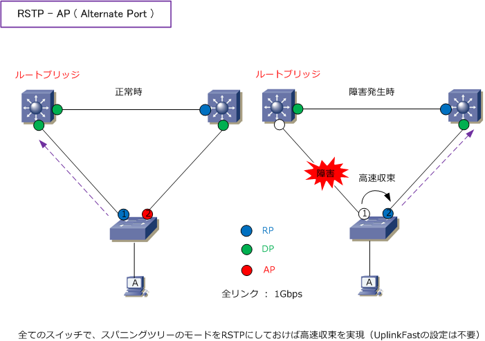
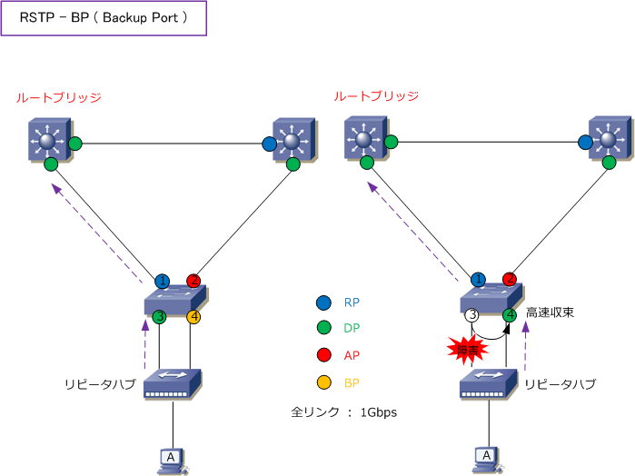

RSTP
RSTP（ Rapid Spanning Tree Protocol ）とは
RSTPは、STPを改良して高速（Rapid）収束を実現したプロトコル。STPはIEEE802.1Dで標準化されて RSTPはIEEE802.1Wで標準化されたプロトコルです。STPと同様に、RSTPではツリーを作成するために ルートブリッジの選出 ⇒ ルートポートの選出 ⇒ 指定ポートの選出を、同じアルゴリズムで行いますが RSTPでは非指定ポートは存在せずに代替ポートとバックアップポートがあります。特徴は以下のとおり。
| 項番 | RSTPの特徴 |
|---|---|
| 1 | トポロジーに変更があった場合、STPは最大50秒間で収束するのに対して、RSTPでは数秒以内で収束。 |
| 2 | ツリーは「ルートブリッジ選出 ⇒ ルートポート選出 ⇒ 指定ポート選出 ⇒ 代替ポート選出」の順で形成。 |
| 3 | ポートの役割には「ルートポート、指定ポート、代替ポート、バックアップポート」の4つがある。 |
| 4 | ポートの状態には「ディスカーディング、ラーニング、フォワーディング」の3つのステータスがある。 |
| 5 | RSTPは、STPと下位互換性があり、RSTPモードのスイッチとSTPモードのスイッチを相互接続可能。 |
| 6 | RSTPは、プロポーザル（提案）とアグリーメント（合意）メッセージをBPDUに含めてネゴシエートする |
RSTP - 各ポートの役割
RSTPにはルートポート、指定ポート、代替ポート、バックアップポートの4種類があります。以下の説明で ルートポートと指定ポートはSTPと同じ内容です。代替ポートとバックアップポートは新しい技術内容です。
| ポートの種類 | ステータス | 説明 ( RSTPでは常に小さい値が強い ) |
|---|---|---|
| ルートポート | Forwarding | RP（Root Port)。非ルートブリッジごとに1ポート選出される、ルートブリッジに最も近いポート ① 各ポートのルートパスコスト ② 送信元ブリッジID ③ 送信元ポートID の順で比較。 |
| 指定ポート | Forwarding | DP (Designated Port)。各リンクごとに1ポート選出される、ルートブリッジに最も近いポート。 ① 各スイッチのRPのルートパスコスト ② 送信元ブリッジID ③ 送信元ポートID の順で比較。 |
| 代替ポート | Discarding | AP (Alternate Port)。ルートポートのバックアップ用のポート。ルートポートのリンクダウン時に 即座にルートポートの役割を引き継ぎフォワーディングになる。CiscoのUplinkFastと同等機能。 代替ポートはルートポートと指定ポートに選出されなかったポートなのでSTPでいう非指定ポート。 |
| バックアップ ポート |
Discarding | BP (Backup Port)。指定ポートのバックアップとなるポート。指定ポートがダウンした際、即座に 指定ポートの役割を引き継ぎ、フォワーディングになる。このBPはリピータハブ等の共有メディア とスイッチとが接続する場合に発生するポートです。詳細は下図を参照。どちらのポートがDPで BPになるかは送信元ポートID (ポートプライオリティ+ポート番号)で比較。小さい方がDPになる。 |
RSTPの代替ポート（AP）はSTPの非指定ポート（NDP）と同じフローで選出されます。STPと動作も同じ ですが、STPのように収束時間が長くなく、UplinkFastの設定がなしでも数秒以内に切り替りが完了します。

RSTPのバックアップポート（BP）はSTPのポートの役割の概念にはないポートですが、代替ポート（AP）と 同じようにループを回避するためにブロッキングされるポートです。このバックアップポートは下図のように リピータハブ等の共有メディアとスイッチとの接続時に発生します。どちらのポートがDP、BPになるのかは 送信元ポートID（ポートプライオリティ+ポート番号）が小さい方がDPになり残りのポートがBPとなります。

※ Catalystスイッチの場合、Catalystスイッチと接続するリピータハブの機種によっては高速収束しない場合があります。
RSTP - スパニングツリープロトコルのポート状態
RSTPでは、STPのポート状態の「 ディセーブル、ブロッキング、リスニング 」をディスカーディングに 統合しています。RSTPのラーニングとフォワーディングはSTPと同じ内容で、動作も全く同じとなります。
| STPのポート状態 | RSTPのポート状態 | 説明 | MACアドレスの学習 |
|---|---|---|---|
| ディセーブル | ディスカーディング | ・ フレームを転送しない。 ・ 送信元MACアドレスを学習をしない。 ・ BPDUを受信する。 |
× |
| ブロッキング | ディスカーディング | ・ フレームを転送しない。 ・ 送信元MACアドレスを学習をしない。 ・ BPDUを受信する。 |
× |
| リスニング | ディスカーディング | ・ フレームを転送しない。 ・ 送信元MACアドレスを学習をしない。 ・ BPDUを受信する。 |
× |
| ラーニング | ラーニング | ・ フレームを転送しない。 ・ 送信元MACアドレスを学習する。 ・ BPDUを送受信し合う。 |
○ |
| フォワーディング | フォワーディング | ・ フレームを転送する。 ・ 送信元MACアドレスを学習する。 ・ BPDUを送受信し合う。 |
○ |
RSTPの動作 →